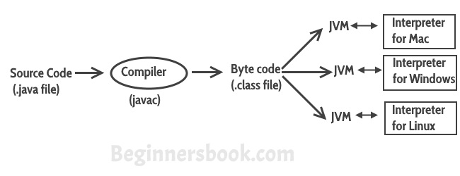
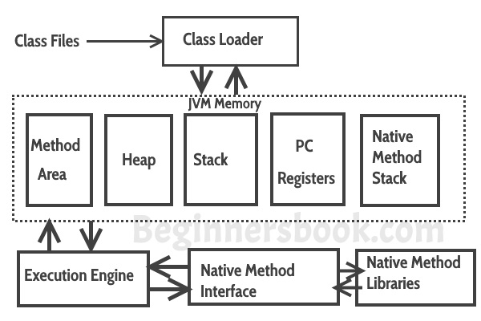
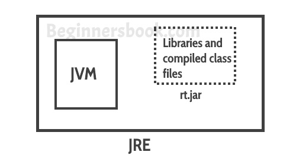
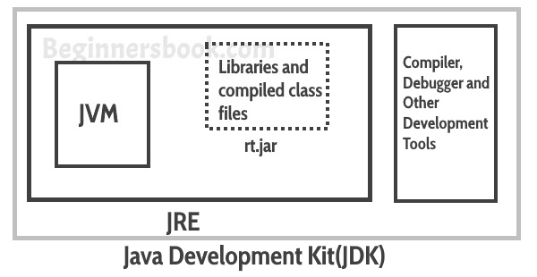

Java is a high level programming language. A program written in high level language cannot be run on any machine directly. First, it needs to be translated into that particular machine language. The javac compiler does this thing, it takes java program (.java file containing source code) and translates it into machine code (referred as byte code or .class file).
Java Virtual Machine (JVM) is a virtual machine that resides in the real machine (your computer) and the machine language for JVM is byte code. This makes it easier for compiler as it has to generate byte code for JVM rather than different machine code for each type of machine. JVM executes the byte code generated by compiler and produce output. JVM is the one that makes java platform independent.
So, now we understood that the primary function of JVM is to execute the byte code produced by compiler. Each operating system has different JVM, however the output they produce after execution of byte code is same across all operating systems. Which means that the byte code generated on Windows can be run on Mac OS and vice versa. That is why we call java as platform independent language. The same thing can be seen in the diagram below:

So to summarise everything: The Java Virtual machine (JVM) is the virtual machine that runs on actual machine (your computer) and executes Java byte code. The JVM doesn’t understand Java source code, that’s why we need to have javac compiler that compiles *.java files to obtain *.class files that contain the byte codes understood by the JVM. JVM makes java portable (write once, run anywhere). Each operating system has different JVM, however the output they produce after execution of byte code is same across all operating systems.
JVM Architecture

Lets see how JVM works:
Class Loader: The class loader reads the .class file and save the byte code in the method area.
Method Area: There is only one method area in a JVM which is shared among all the classes. This holds the class level information of each .class file.
Heap: Heap is a part of JVM memory where objects are allocated. JVM creates a Class object for each .class file.
Stack: Stack is a also a part of JVM memory but unlike Heap, it is used for storing temporary variables.
PC Registers: This keeps the track of which instruction has been executed and which one is going to be executed. Since instructions are executed by threads, each thread has a separate PC register.
Native Method stack: A native method can access the runtime data areas of the virtual machine.
Native Method interface: It enables java code to call or be called by native applications. Native applications are programs that are specific to the hardware and OS of a system.
Garbage collection: A class instance is explicitly created by the java code and after use it is automatically destroyed by garbage collection for memory management.
JVM Vs JRE Vs JDK
JRE: JRE is the environment within which the java virtual machine runs. JRE contains Java virtual Machine(JVM), class libraries, and other files excluding development tools such as compiler and debugger.
Which means you can run the code in JRE but you can’t develop and compile the code in JRE.
JVM: As we discussed above, JVM runs the program by using class, libraries and files provided by JRE.

JDK: JDK is a superset of JRE, it contains everything that JRE has along with development tools such as compiler, debugger etc.

Leave a Reply